Lamborghini
Automobili Lamborghini S.p.A. - італійська компанія, виробник спортивних авто, а також тракторів Lamborghini Trattori. Все виробництво з 1900 працівниками повністю розташоване у комуні Сант'Агата-Болоньєзе, біля Болоньї. Компанія заснована у 1963 році Ферруччо Ламборгіні. На той час він вже був засновником та власником кількох компаній.
Сам Ламборґіні після заснування компанії володів нею ще 9 років.З 1998 року повністю належить німецькій Audi.

Історія
Власники Lamborghini:
- Жорж-Анрі Росетті і Рене Ламер (1972, 1974—1977);
- період банкрутства (1977—1984);
- Патрік Мімран (Patrick Mimran, 1984—1987),
- Chrysler (1987—1994),
- MegaTech Ltd. (1994—1998),
- Audi AG (з 1998).
На початку 1960-х років виробник тракторів Ферруччо Ламборґіні (1916—1993) почав виявляти інтерес до розробки швидкісних автомобілів. Він мав автомобілі виробництва OSCA, Maserati, Ferari, але жодне авто його не влаштовувало за всіма показниками.
Є кілька версій щодо причин, з яких Ламборґіні 1962 року заснував власну фірму. Всі вони зводяться до конфлікту між Енцо Феррарі (власником компанії Ferrari) і Ламборґіні.
Найпопулярнішою є версія сина Ферруччо Ламборґіні, за якою його батько прибув на фабрику до Енцо Феррарі поскаржитися на якість зчеплення у своєму автомобілі Ferrari 250 GT.
Енцо ідправив Ламборґіні назад з побажанням і далі займатися тракторами, бо, мовляв, на автомобілях (тим більше спортивних) Ламборґіні не розуміється.
Ламборґіні повернувся на свою фабрику, розібрав трансмісію у власному Ferrari 250 GT і виявив, що виробник багатьох деталей той самий, що й у тракторах «Ламборґіні». На своїх складах він знайшов відповідну заміну, і проблему було вирішено.
Автомобільна фірма «Ламборґіні» була створена як дочірня фірма компанії Lamborghini Trattori S.p.A. Вона працює в селищі Сант-Аґата Болоньєзе (Sant'Agata Bolognese) біля Болоньї.
Прототип автомобіля, відомий як Lamborghini 350GTV, був представлений на автошоу в Турині 1963 року. Продажі серійної версії цього прототипу були дуже успішними. Народжений під знаком Тельця, ще й аматор кориди, Ферруччо Ламборґіні прикрасив свій логотип зображенням бика.
За успішною моделлю 350GT прийшла не менш успішна Lamborghini 400GT, що принесла достатньо коштів для розробки першого суперкара — легендарного Lamborghini Miura. Цей прототип автомобіля продемонстрував сам Ферруччо в листопаді 1965 р. на автошоу в Турині, а вже в березні 1966 на автошоу в Женеві була представлена робоча версія. Miura мала великий успіх — тільки за 1967 продали 111 авто — і компанія здобула популярність по всьому світу.
1971 — Ламборґіні знову здивував світ прототипом нової моделі Lamborghini Countach. Хоча сам автомобіль почали виробляти лише трьома роками пізніше (1974), до того часу він залишався в центрі уваги на кожному автошоу. Прототип мав нові на той час двері, що відкриваються вертикально, задні забірники повітря і потужний 4-літровий двигун.
Проте 1972 року компанія зіштовхнулася із серйозною кризою — перервався контракт на постачання великої партії тракторів у Південну Америку. Брак коштів змусив Ферруччо продати частину свого тракторного виробництва, яку купила компанія Fiat. Зрештою все тракторне виробництво перейшло у власність Same Deutz-Fahr Group, яка й виробляє трактори «Ламборґіні» досі.
Протягом 1970-х років успішні продажі Lamborghini Countach підтримували компанію на плаву. Незабаром автомобільне виробництво стало самодостатнім і прибутковим, а, проте, Ламборґіні продав свою компанію швейцарським інвесторам — спочатку 51 % Жоржу-Анрі Росетті (Georges-Henri Rossetti, 1972), а 1974 решту — Рене Ламеру (René Leimer). Сам Феруччо Ламборґіні помер 1993 року у віці 76 років.
Внаслідок нафтової кризи 1970-х рр. продажі спортивних автомобілів різко впали. Компанія «Ламборґіні», в числі інших, зіткнулася з фінансовими проблемами, постачання запасних частин були зірвані. Замовлення на автомобілі були розписані на два роки вперед, і покупці були дуже незадоволені таким терміном очікування. Урешті-решт 1978 італійський суд оголосив компанію банкрутом, і 1981 її купили брати Жан і Патрік Мімрани зі Швейцарії.
1987 — компанію перекупив американський концерн «Крайслер» (Chrysler). У цей час тривала робота над наступником Countach — Lamborghini Diablo. Значні технічні та фінансові ресурси були залучені в модернізацію фірми та її продукції, і кінцевий результат став успіхом — модель Diablo дуже швидко знову вивела компанію на світовий рівень.
Проте восени 1993 корпорація Chrysler через фінансові труднощі була змушена продати «Ламборґіні» інвестиційній групі «МегаТех» (Mega-Tech або M'tec), зареєстрованій на Бермудських островах, але справжніми власниками якої були індонезійський нафтохімічний консорціум «Масахара Буана» та Томі Сухарто (Tommy Suharto).
1998 — через ті ж самі фінансові проблеми компанія знову поміняла власника. Цього разу ним стала компанія Audi AG. Новий власник неабияк вплинув на дизайн суперкарів, сьогоднішніх Lamborghini Murciélago.
Автомобілі «Ламборґіні» є одними з найбільш потужних, дорогих і ексклюзивних автомобілів серійного збирання. Крім того, різні моделі мають свої унікальні технічні новації, наприклад, кузов із вуглеволокна чи високотехнологічні двигуни V10.
Оригінальний стиль автомобілів розробляли відомі дизайнери та відповідні фірми: Франко Скальйоне (Franco Scaglione), Touring, Zagato, Маріо Марацці (Mario Marazzi), Bertone, ItalDesign і Марчелло Ґандіні (Marcello Gandini).
Автомобілі
Серійні моделі
- Lamborghini 350GT(1964–1967)
|
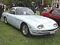
|
- Lamborghini 400GT(1966–1968)
|
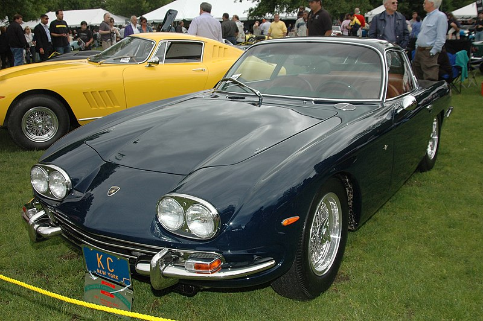
|
- Lamborghini Miura(1966–1973)
|
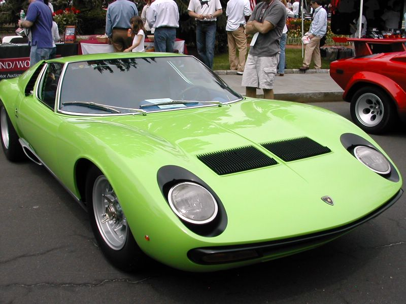
|
- Lamborghini Islero(1968–1970)
|
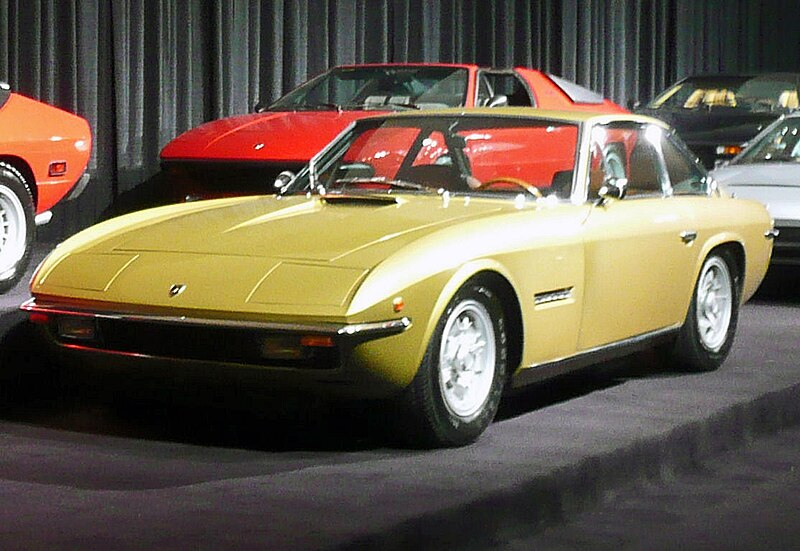
|
- Lamborghini Espada(1968–1978)
|
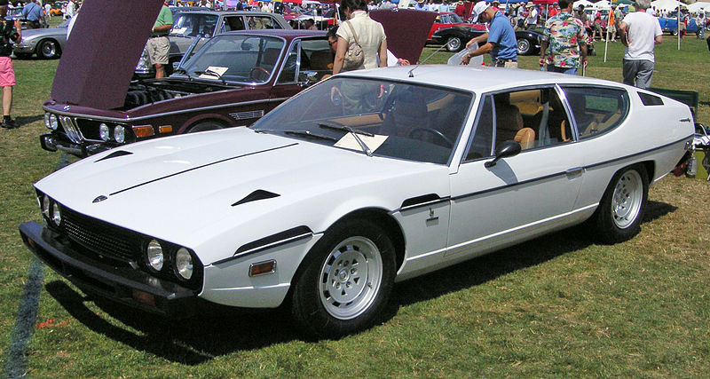
|
- Lamborghini Jarama(1970–1976)
|
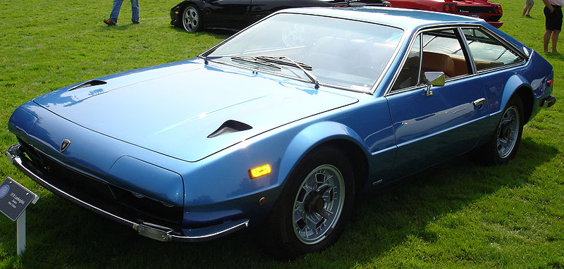
|
- Lamborghini Countach(1974–1990)
|
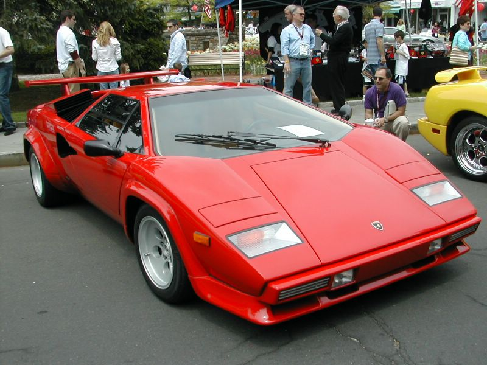
|
- Lamborghini Urraco(1975–1979)
|

|
- Lamborghini Silhouette(1976–1981)
|
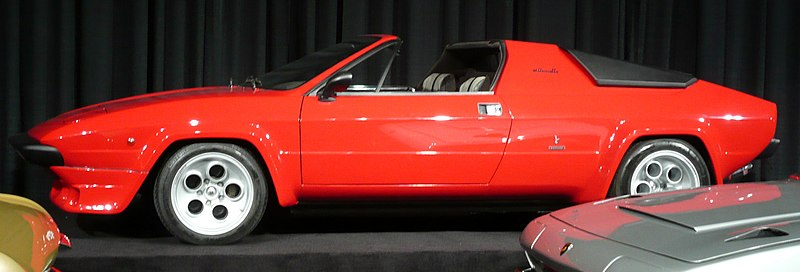
|
- Lamborghini Jalpa(1981–1988)
|
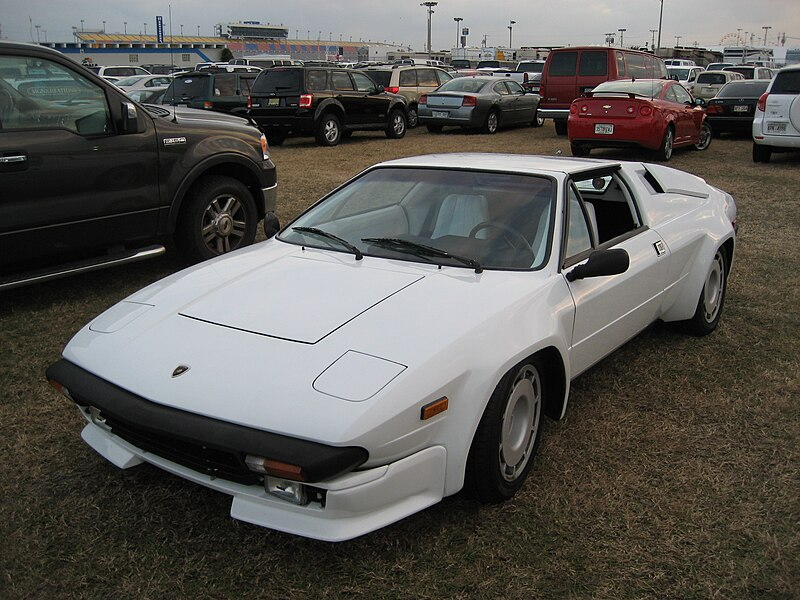
|
- Lamborghini LM002(1982–1993)
|
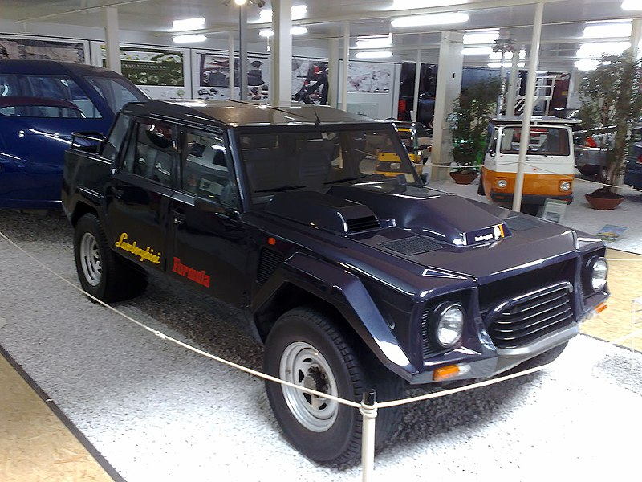
|
- Lamborghini Diablo(1990–2001)
|
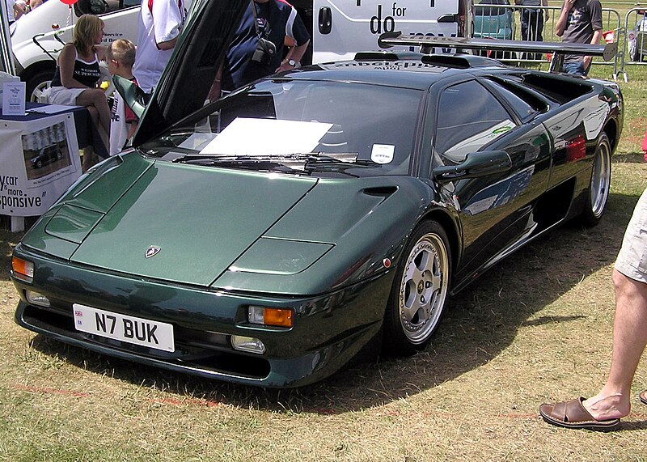
|
- Lamborghini Murciélago(2001—2010)
|
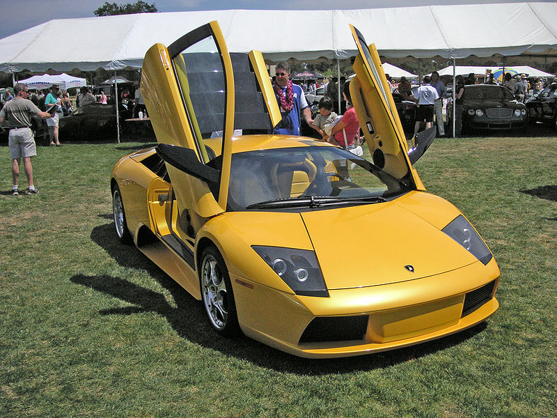
|
- Lamborghini Gallardo(з 2003)
|
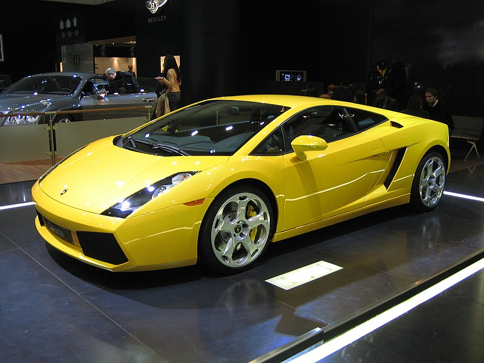
|
- Lamborghini Reventón(2008)
|
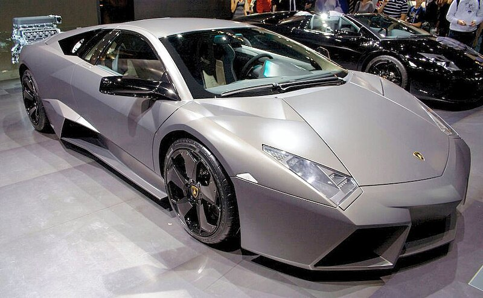
|
- Lamborghini Aventador(2011)
|
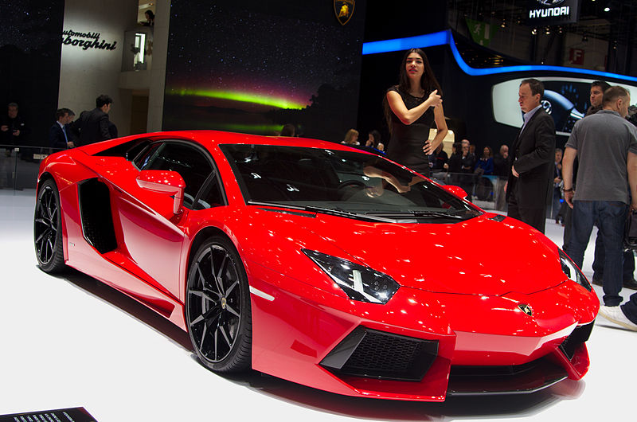
|
- Lamborghini Sesto Elemento(2011)
|
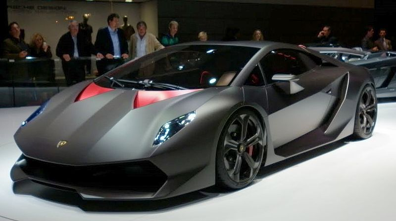
|
- Lamborghini Veneno(2013)
|
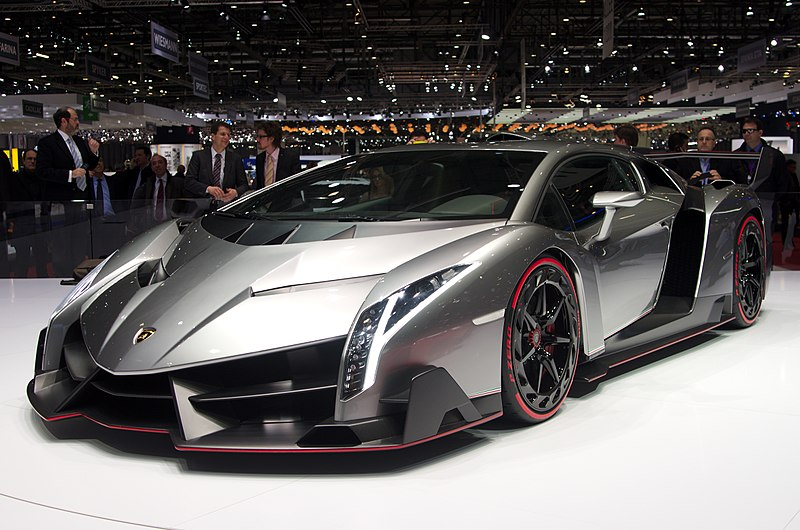
|
Вся інформація була взята з Вікіпедії